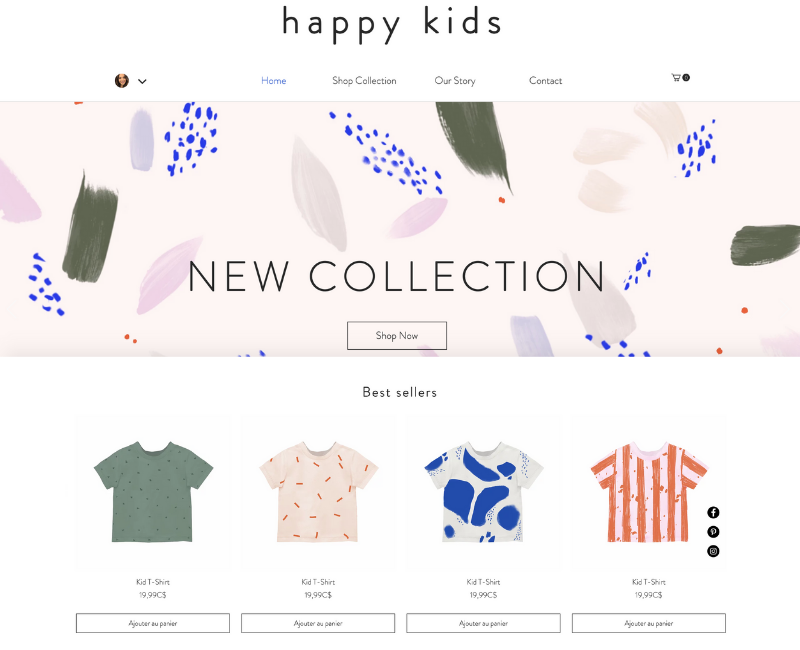
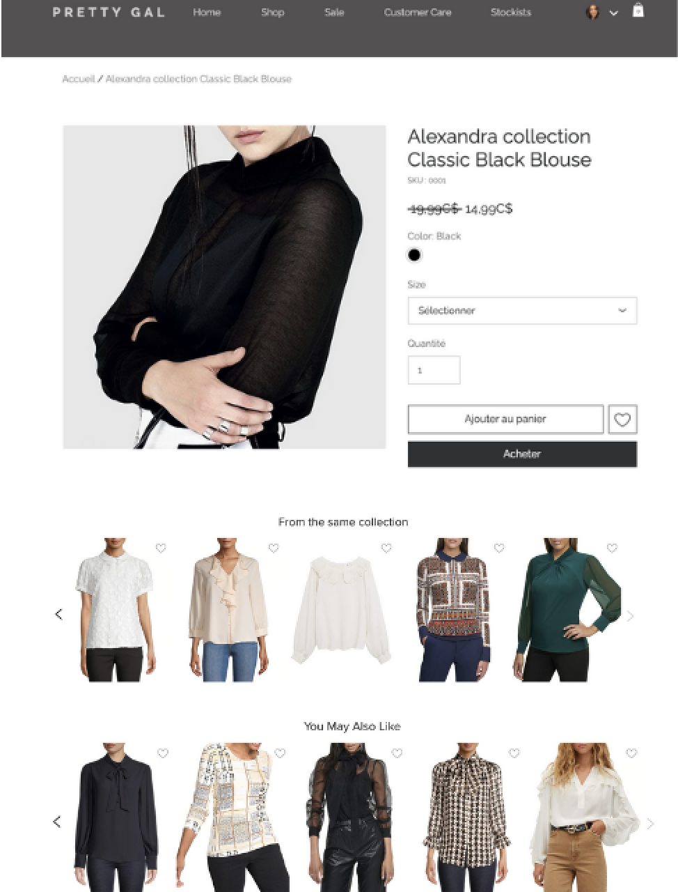
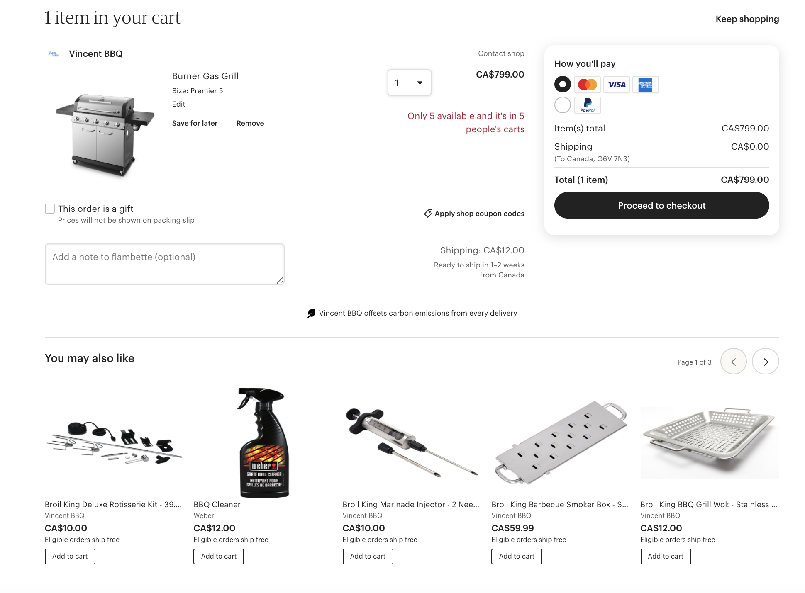

Personalization is one of the biggest marketing trends and is becoming the norm in the industry. Customers are becoming more and more impatient when dealing with online experiences. Not only do they want to be treated as individuals, but they’re also expecting brands to show them content that is relevant to them quickly.
Adding product recommendations to your online experience can help you remain relevant across every interaction while determining your customers’ intent to increase conversion and ensure they have the experience they expect. With the help of AI, product recommendations are experiencing a renaissance. While recommended products are now expected, a lot of them are still using static rules, taxonomy or simple page view tracking mechanism. New advancement in data capture and attribution, product embeddings, and multi-device tracking, allows recommenders to be more precise, personalize and efficient. With these new tools in hand, applying the right strategy becomes paramount.
Once you are convinced that you want to implement recommendations, you need to decide about your strategy.
Where do you want to add recommendations? What type of recommendations should users see?
Explore some ideas on where you can implement product recommendations with Coveo.
Home page
The home page is a great opportunity to welcome visitors with some of your best-selling products. Shopping online feels riskier than shopping offline, especially with a new store. This is a common challenge for online stores since customers are not able to see, touch, or feel a product before purchasing it.
Take advantage of the technique known as social proof to convince customers that they are purchasing products that are appreciated by other buyers by displaying your top products on the home page. Knowing that a product is a best seller tends to reduce cognitive dissonance regarding buyer’s remorse.

With the Coveo product recommendations model, you simply need to include the Popular Items: Bought (popularBought) ML parameter to your model. The model supports filtering for brands and categories in case you want to showcase best-sellers in a particular category or from a particular brand. In addition, if you are displaying the product review information, you can boost products that have a higher rating, which once again takes advantage of the social proof principle.
Product detail page
When we mention product recommendations, the first thing customers have in mind are the various recommendations that are made on the product detail page. This is the most common location to find product recommendations due to the fact that it is an excellent way to showcase different products from your catalog that might interest your users.
At this stage, customers are browsing on your site and are open to see suggestions for similar products. You can display recommendations based on similar products, products from the same brand, or even other products that are on sale that they might be interested in.
The type of recommendation you want to display on your product detail page is up to you, but make sure that the strategy behind it fits with the type of customer you have. For example, if you are an online store that sells clothing from various popular brands, you might have some customers that are loyal to certain brands. This is why you should also add recommendations based on this criteria, not only for similar products.

To implement this digital experience with Coveo, you can use the Frequently Viewed Together setting from the Product Recommendations Machine Learning model.
The following example illustrates a product listing page that contains not only one, but two different sets of recommendations. Both recommendations share the same model, but differ in the configuration.
As mentioned above, both recommendations are using the Coveo Product Recommendation model with the Frequently Viewed Together sub-model. When leveraging this strategy, you need to pass the input product SKU for the model to provide its recommendations. This will allow you to showcase similar products.
Shopping cart page
Depending on how you are leveraging recommendations and the number of products you have listed for sale, it is highly possible that a customer hasn’t encountered all of the products in your catalog.
The cart represents the last opportunity that you have to increase the average order value by cross-selling the customer. At this stage, it is best to display products that the customer might be interested in based on what can be found in the cart.
As in the image below, if a user has a BBQ in their cart, you do not want to recommend additional barbecues, because chances are that the customer will not purchase a second barbecue. However they might be interested in some accessories.

With the Coveo Product Recommendation models, you can leverage the cart recommender strategy. The model analyzes frequent buying patterns by grouping together sets of items that are frequently bought together in the same transaction (purchase events). When leveraging the Cart recommender strategy, you need to pass the input products SKUs in the itemIds ML query parameter for the model to provide its recommendations.
As in the image above, if a user has a BBQ in their cart, the model is not recommending additional barbecues, because chances are that other customers didn’t purchase a second barbecue. This is why we are seeing BBQ accessories.
No results page
Do not miss the opportunity to recommend products when a user searches for a product that does not exist on your site. A visitor might not find the product they had in mind, but this does not mean that you can’t suggest something to them. Consider featuring popular products from your store.
If you are a Coveo customer, you can achieve this with the Popular Items: Viewed submodel. No additional ML query parameters need to be configured for the model to provide its recommendations
You might want to check out a previous blog post that we have about this: Avoid No Results Pages, Display Popular Results Instead.
Conclusion
Now that you have seen some strategies, all that is left is to choose what fits best for you site.
Our team is working on adding more strategies for you to choose from, stay tuned!
Are you passionate about UX like we are? Join the Coveo team and help us make the web a better place!